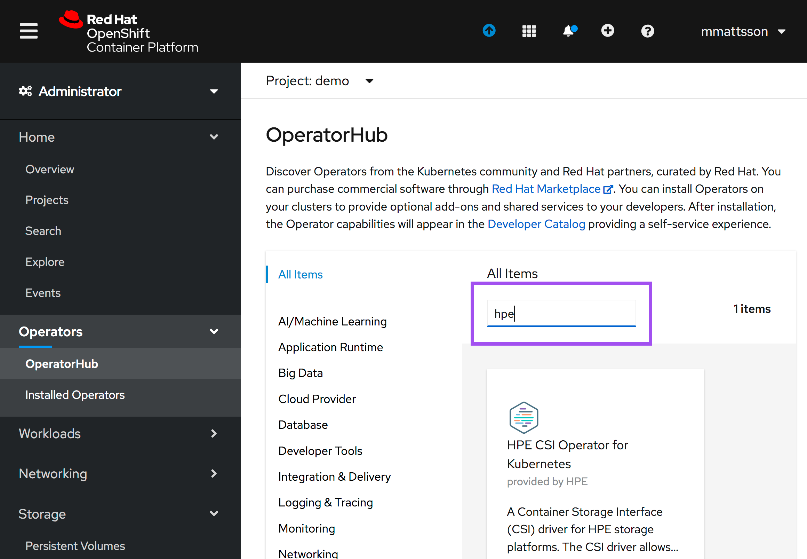
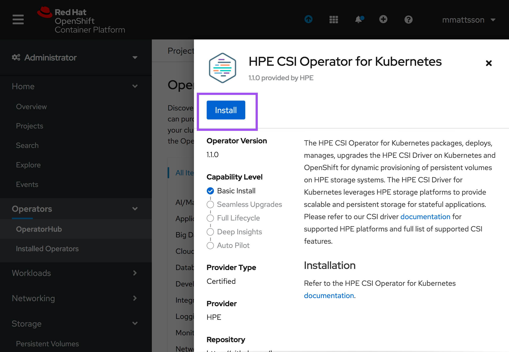
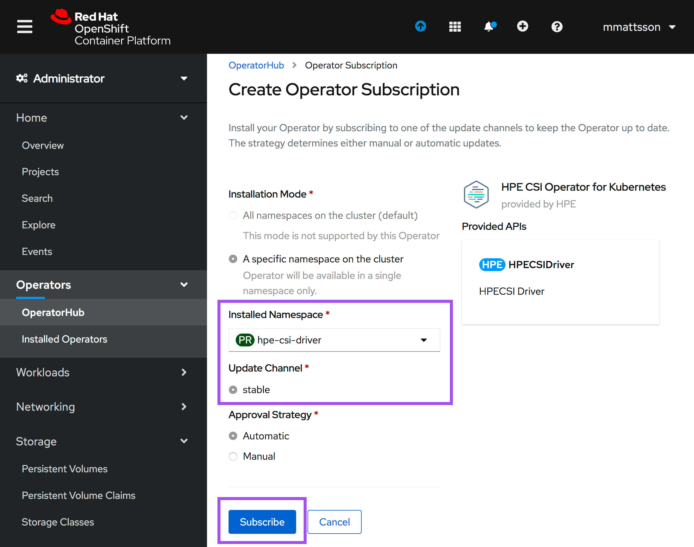
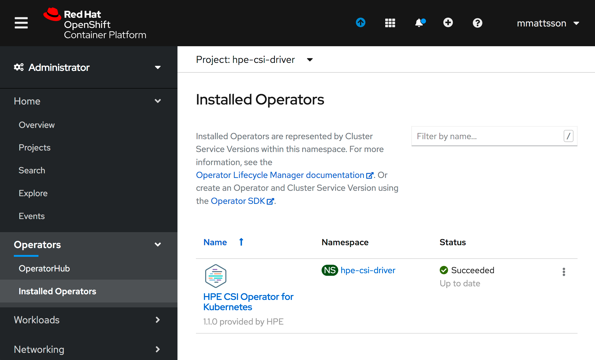
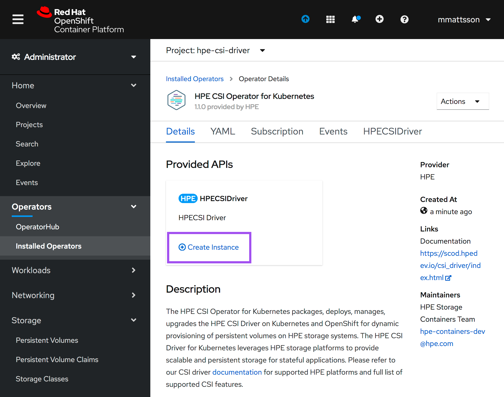
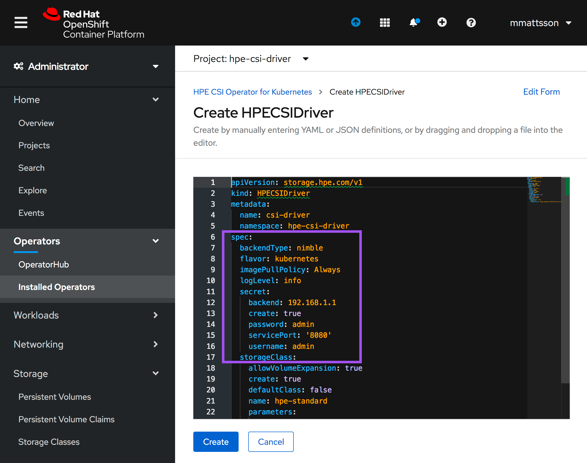
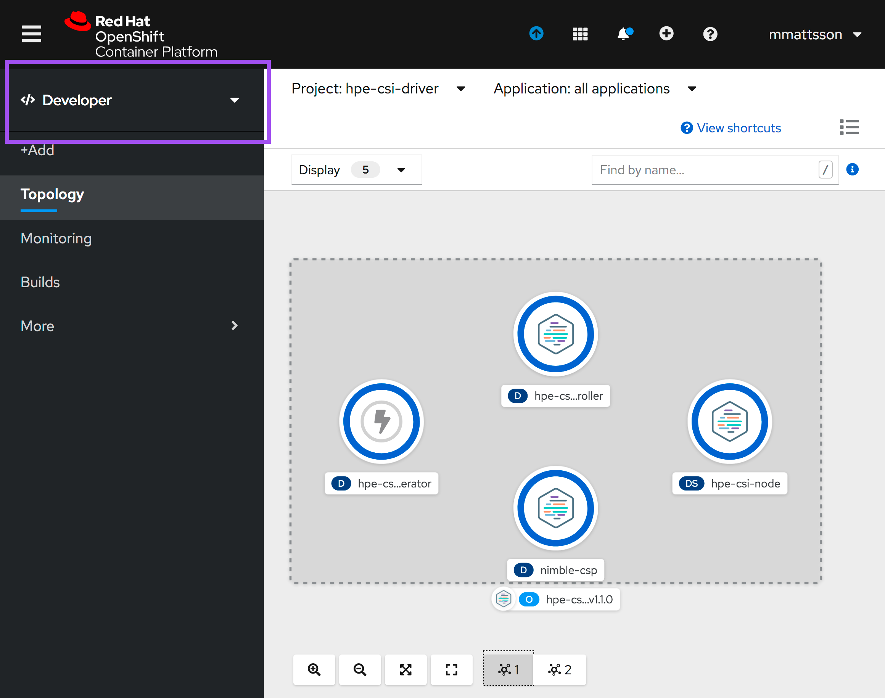

Overview¶
HPE and Red Hat have a long standing partnership to provide jointly supported software, platform and services with the absolute best customer experience in the industry.
Red Hat OpenShift uses open source Kubernetes and various other components to deliver a PaaS experience that benefits both developers and operations. This packaged experience differs slightly on how you would deploy and use the HPE volume drivers and this page serves as the authoritative source for all things HPE primary storage and Red Hat OpenShift.
OpenShift 4¶
Software deployed on OpenShift 4 follows the Operator pattern. CSI drivers are no exception.
Certified combinations¶
Software delivered through the HPE and Red Hat partnership follows a rigorous certification process and only qualify what's listed in the following table.
| Status | Red Hat OpenShift | HPE CSI Operator | Container Storage Providers |
|---|---|---|---|
| Certified | 4.2 | 1.2.0 | Nimble, 3PAR and Primera |
| Certified | 4.3 | 1.2.0 | Nimble, 3PAR and Primera |
| Certified | 4.3, 4.4 | 1.3.0 | Nimble, 3PAR and Primera |
Check this table periodically for future releases.
Pointers
Other combinations may work but will not be supported.
Both Red Hat Enterprise Linux and Red Hat CoreOS worker nodes are supported.
Deployment¶
The HPE CSI Operator for Kubernetes needs to be installed through the interfaces provided by Red Hat. Do not follow the instructions found on OperatorHub.io.
Tip
There's a tutorial available on YouTube accessible throught the Video Gallery on how to install and use the HPE CSI Operator on Red Hat OpenShift.
Prerequisites¶
The HPE CSI Driver needs to run in privileged mode and needs access to host ports, host network and should be able to mount hostPath volumes. Hence, before deploying HPE CSI Operator on OpenShift, please create the following SecurityContextConstraints (SCC) to allow the CSI driver to be running with these privileges.
Download the SCC to where you have access to oc and the OpenShift cluster:
curl -sL https://raw.githubusercontent.com/hpe-storage/co-deployments/master/operators/hpe-csi-operator/deploy/scc.yaml > hpe-csi-scc.yaml
Change my-hpe-csi-operator to the name of the project (e.g. hpe-csi-driver below) where the CSI Operator is being deployed.
oc new-project hpe-csi-driver --display-name="HPE CSI Driver for Kubernetes"
sed -i 's/my-hpe-csi-operator/hpe-csi-driver/g' hpe-csi-scc.yaml
Deploy the SCC:
oc create -f hpe-csi-scc.yaml
securitycontextconstraints.security.openshift.io/hpe-csi-scc created
Important
Make note of the project name as it's needed for the Operator deployment in the next steps.
Caveats¶
At this time of writing (CSI Operator 1.2.0) the default StorageClass being shipped with the CSI driver is not very useful for OpenShift as it doesn't allow applications to write in the PersistentVolumes. Make sure to deploy a new StorageClass with .parameters.fsMode set to "0770". This caveat will be removed in subsequent releases.
- Learn how to create a base
StorageClassin using the CSI driver.
OpenShift CLI¶
This provides an example Operator deployment using oc. If you want to use the web console, proceed to the next section.
It's assumed the SCC has been applied to the project and have kube:admin privileges. As an example, we'll deploy to the hpe-csi-driver project as described in previous steps.
First, an OperatorGroup needs to be created.
apiVersion: operators.coreos.com/v1
kind: OperatorGroup
metadata:
name: hpe-csi-driver-for-kubernetes
namespace: hpe-csi-driver
spec:
targetNamespaces:
- hpe-csi-driver
Next, create a Subscription to the Operator.
apiVersion: operators.coreos.com/v1alpha1
kind: Subscription
metadata:
name: hpe-csi-operator
namespace: hpe-csi-driver
spec:
channel: stable
name: hpe-csi-operator
source: certified-operators
sourceNamespace: openshift-marketplace
The Operator will now be installed on the OpenShift cluster. Before instantiating a CSI driver, watch the roll-out of the Operator.
oc rollout status deploy/hpe-csi-operator -n hpe-csi-driver
Waiting for deployment "hpe-csi-operator" rollout to finish: 0 of 1 updated replicas are available...
deployment "hpe-csi-operator" successfully rolled out
The next step is to create a HPECSIDriver object. It's unique per backend CSP.
apiVersion: storage.hpe.com/v1
kind: HPECSIDriver
metadata:
name: csi-driver
namespace: hpe-csi-driver
spec:
backendType: nimble
imagePullPolicy: Always
logLevel: info
secret:
backend: 192.168.1.1
create: true
password: admin
servicePort: '8080'
username: admin
storageClass:
allowVolumeExpansion: true
create: true
defaultClass: false
name: hpe-standard
parameters:
accessProtocol: iscsi
fsType: xfs
volumeDescription: Volume created by the HPE CSI Driver for Kubernetes
apiVersion: storage.hpe.com/v1
kind: HPECSIDriver
metadata:
name: csi-driver
namespace: hpe-csi-driver
spec:
backendType: primera3par
imagePullPolicy: Always
logLevel: info
secret:
backend: 10.10.10.1
create: true
password: 3pardata
servicePort: '8080'
username: 3paradm
storageClass:
allowVolumeExpansion: true
create: true
defaultClass: false
name: hpe-standard
parameters:
accessProtocol: iscsi
fsType: xfs
volumeDescription: Volume created by the HPE CSI Driver for Kubernetes
Note
As noted in the caveats, the installed StorageClass is not very useful for OpenShift. Create a new base StorageClass by following the steps in using the CSI driver.
OpenShift web console¶
Once the SCC has been applied to the project, login to the OpenShift web console as kube:admin and navigate to Operators -> OperatorHub.
 Search for 'HPE' in the search field.
 Select the HPE CSI Operator and click 'Install'.
 In the next pane, click 'Subscribe'.
 The HPE CSI Operator is now installed.
 Click the HPE CSI Operator, in the next pane, click 'Create Instance'.
 Configure the instance with the desired values!.
Values
The required parameters are .spec.backendType, .spec.secret.backend and the credentials for the backend (.spec.secret.username and .spec.secret.password).
By navigating to the Developer view, it should now be possible to inspect the CSI driver and Operator topology.

Note
As noted in the caveats, the installed StorageClass is not very useful for OpenShift. Create a new base StorageClass by following the steps in using the CSI driver.
Additional information¶
At this point the CSI driver is managed like any other Operator on Kubernetes and the life-cycle management capabilities may be explored further in the official Red Hat OpenShift documentation.
OpenShift 3¶
Customers still using OpenShift 3 may use any of the legacy FlexVolume drivers for managing persistent storage.